Cada protótipo é o HTML que o grid montaria; o PDF ao lado foi gerado pelo Chromium a partir dele (o mesmo motor do “Salvar como PDF”), com marcação. Mesmos 64 pedidos, filtro, grupos País → Cidade e resumo de soma. Abra o HTML ou o PDF pelos links.
Título + linha de informação (linhas, filtro, data). Uma tabela; cabeçalho repetido em cada página; grupo = linha de título da faixa (th scope="rowgroup") com recuo por nível; rodapé do grupo; total no fim; “Página X de Y” no rodapé e título no topo a partir da página 2. Mais próximo do DevExtreme e do que se vê na tela.
HTML (en) · PDF (en) · HTML (árabe, RTL) · PDF (árabe, RTL)
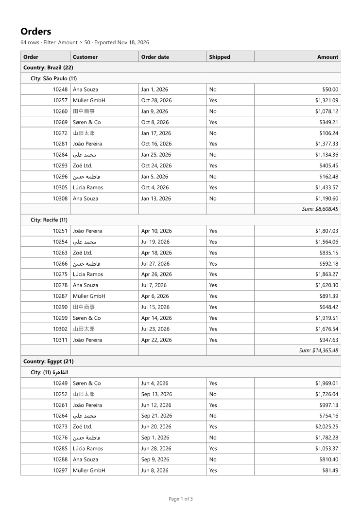
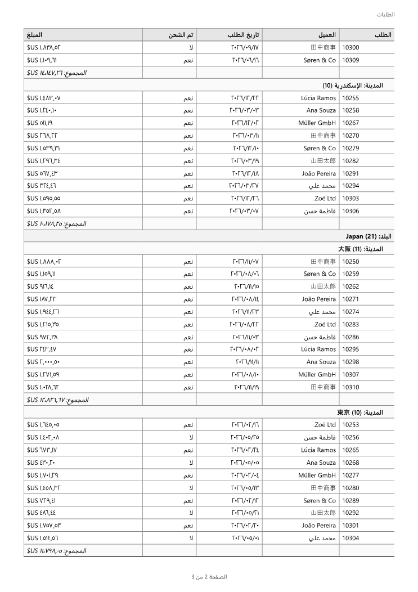
Cada país vira um título (h2) com a própria tabela: o leitor de tela navega por títulos e o PDF ganha marcadores (índice lateral). Subgrupos como linhas; total do país e total geral. Repete o cabeçalho por seção.
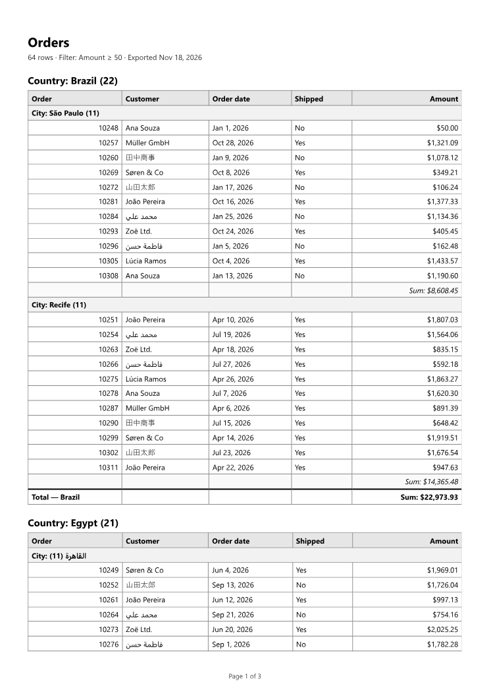
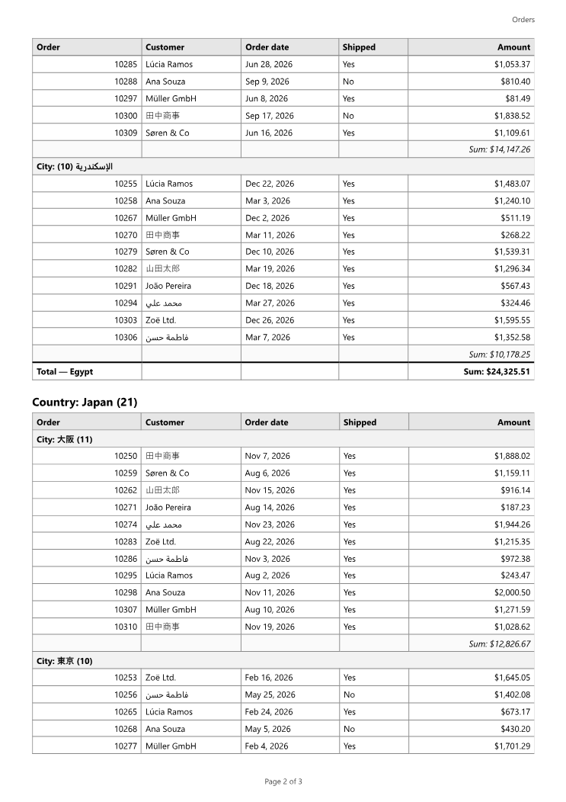
Sem linhas de grupo (includeGroups: false): as colunas agrupadas vêm primeiro, todas as colunas, listras alternadas, paisagem. Para listas longas e conferência.
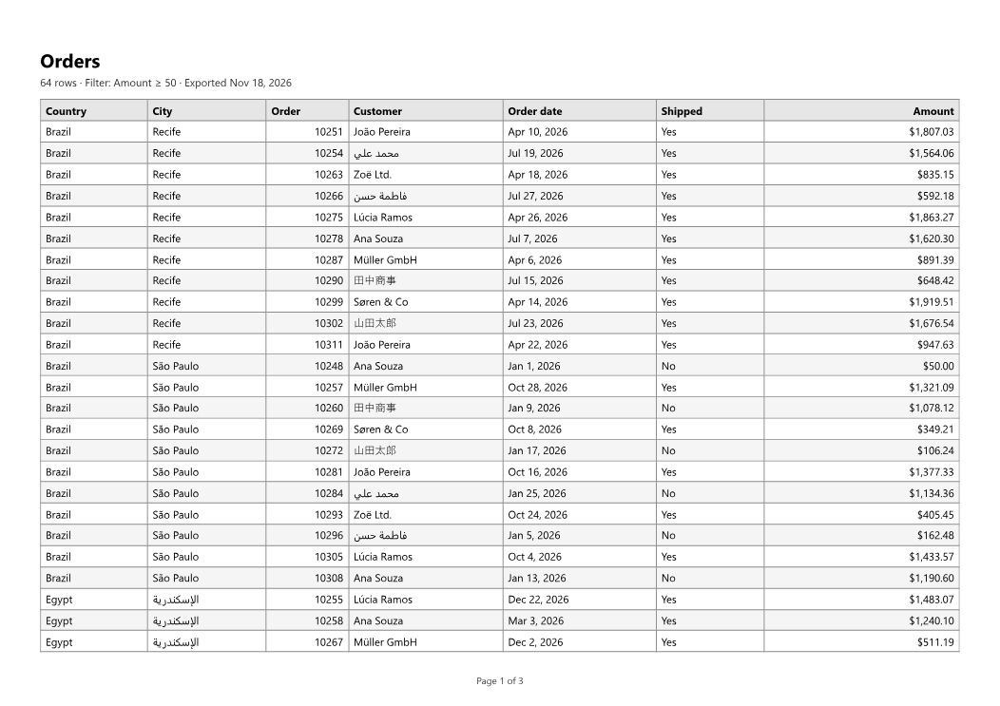
| Marcado | Estrutura | Idioma | Título exibido | Fontes embutidas | |
|---|---|---|---|---|---|
| A (en/ar) | sim | H1, P, Table, TR, TH, TD | en / ar | sim | sim |
| B | sim | H1, P, H2 ×3, Table ×4, TR, TH, TD | en | sim | sim |
| C | sim | H1, P, Table, TR, TH, TD | en | sim | sim |
| DevExtreme 26.1.6 (jsPDF) | não | nenhuma | nenhum | não | não (Helvetica padrão) |
Verificado com pdf.js + pdf-lib (árvore de estrutura, catálogo, fontes). O veraPDF não rodou: o instalador foi bloqueado pela permissão do ambiente.
PDF do DevExtreme · AG Grid: Printing · MUI X: Print export
| Grid | Como | Acessibilidade do PDF |
|---|---|---|
| DevExtreme 26.1 (medido) | pdfExporter.exportDataGrid({ jsPDFDocument, component }): o hospedeiro injeta o jsPDF; tabela com bordas, grupo em linha mesclada (“State: Arkansas (Count: 1)”), resumos, cabeçalho repetido. Árabe/CJK só com fonte que o hospedeiro adiciona. | Sem marcação, sem idioma, sem título, fontes não embutidas. |
| AG Grid 36 (docs) | Sem PDF. “Print layout” (domLayout: 'print') + impressão do navegador; os docs mandam usar CSV/Excel para muitos dados. | A do navegador, sobre a grade em divs. |
| MUI X Data Grid (docs) | “Print export”: copia a grade para um iframe e abre a impressão (hideToolbar, hideFooter, pageStyle, fields). | A do navegador, sobre a grade em divs (não medido). |
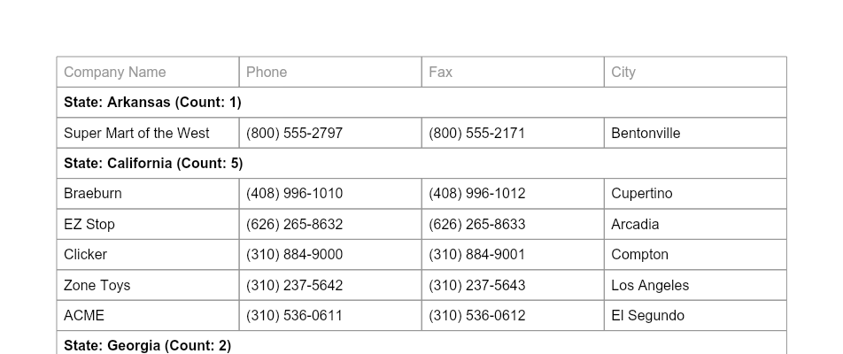
Shaping com rustybuzz (porta do HarfBuzz) e bidi UAX #9 (unicode-bidi), por trecho de mesma fonte e script; fonte de reserva por caractere. Árabe com letras ligadas, harakat, lam-alef e números; hebraico; conjuntos do devanágari; tailandês; CJK e coreano; LTR/RTL misturados na mesma célula. Parágrafo LTR (grid em português/inglês); grid RTL ainda não testado. Texto copiado do PDF ainda sai em ordem visual e sem os conjuntos completos: resolvido com /ActualText por célula junto da marcação.
PDF (nativo) · PDF (WASM no Chromium)
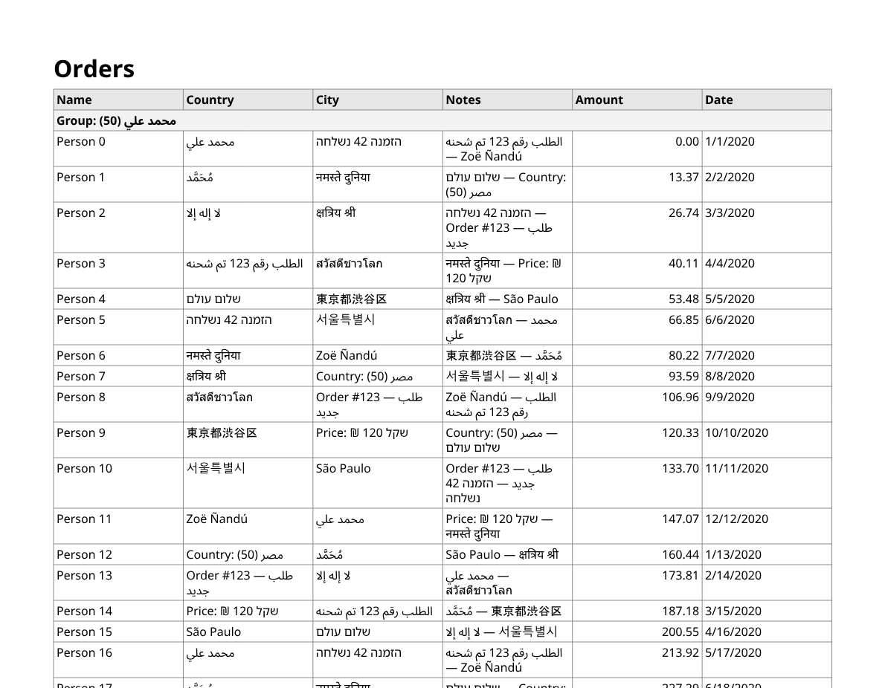
Gerado pelo protótipo otimizado (nativo, 20 s; em WASM no Chromium, 38 s): 19.616 páginas A4, 63 MB. Grupo a cada 50 linhas, total na última página, cabeçalho repetido, “Page X of Y”. Fontes: Noto Sans (latim), Noto Sans Arabic e MS Gothic (CJK) por reserva. Limitações do protótipo: árabe sem letras ligadas nem bidi (o rótulo de grupo com árabe sai invertido), sem árvore de estrutura.
PDF de 63 MB fora do repositório (gerado pelo protótipo).
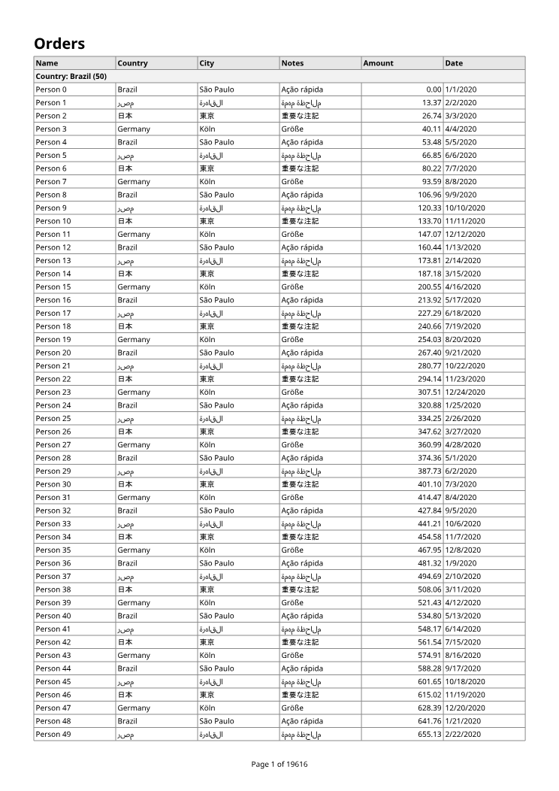
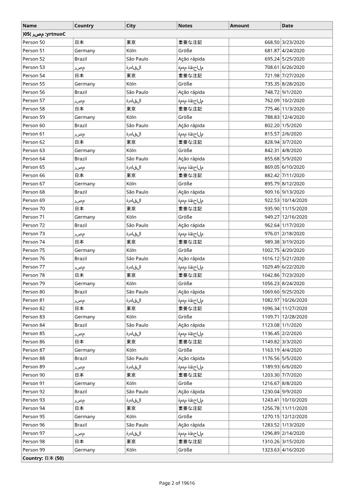
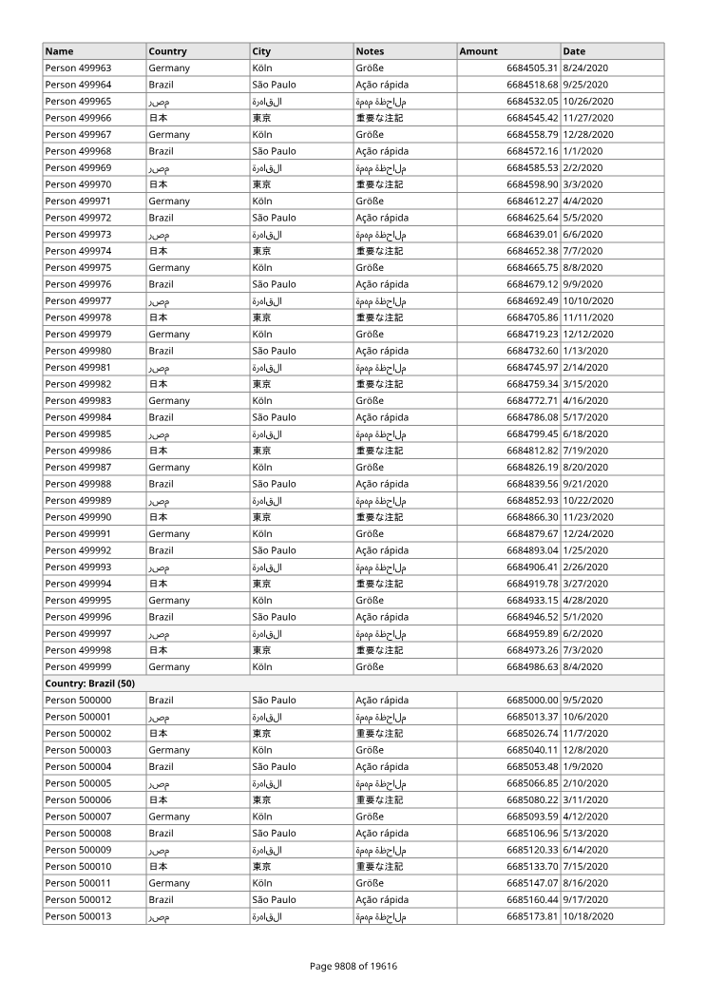
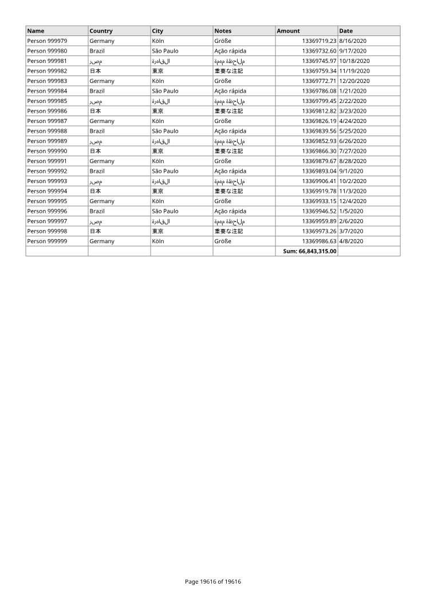
Mesmos dados nos três grids e em duas versões nossas. PDFs extraídos em 2026-11-18: DevExtreme 26.1.6 pela demo (jsPDF, padrão retrato); AG Grid Community atual com domLayout: 'print' e MUI X 8 com exportDataAsPrint(), os dois impressos pelo Chromium (como o “Salvar como PDF”).
| O que acontece com as 18 colunas | Marcação | |
|---|---|---|
| DevExtreme | Espreme todas na largura da página: TODO texto cortado com “…” (“O…”, “C…”) — também no texto do PDF. Dado perdido. | nenhuma |
| AG Grid | Só 6 colunas saem; as outras 12 ficam fora da página. | Table, 6 TH (do navegador) |
| MUI X | Só 9 colunas saem (a 9ª cortada); as outras ficam fora da página. | Table, 9 TH (do navegador) |
| Nosso W1 (HTML) | Paisagem, fonte 6,5 pt, texto quebra na célula: as 18 colunas inteiras numa página. | Table, 18 TH, TD |
| Nosso W2 (HTML) | Colunas em blocos (1–10, depois 11–18), fonte 8 pt, “Order ID” repetido como cabeçalho de linha em cada bloco; título por bloco. | Table, TH de coluna e de linha, H2 |
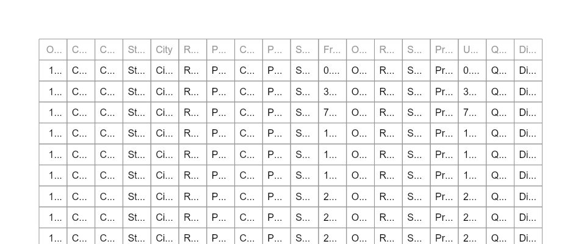
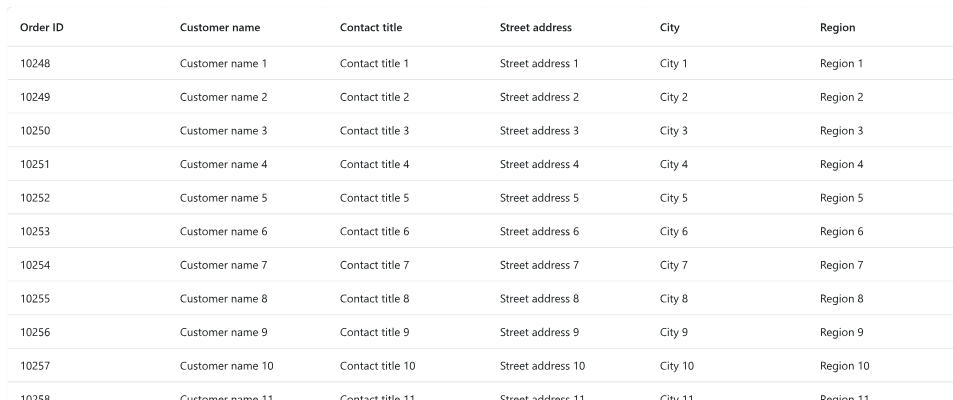
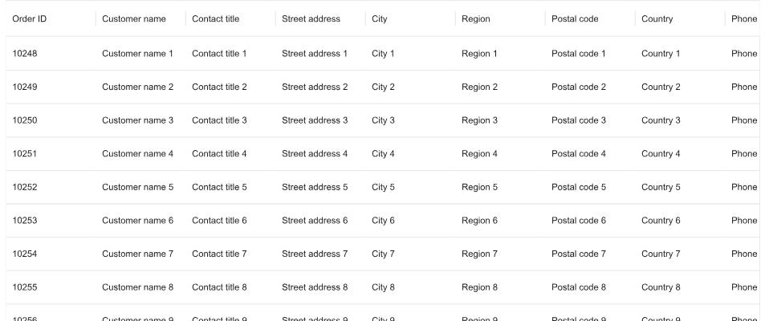
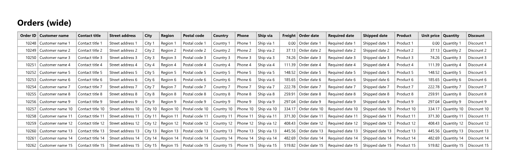
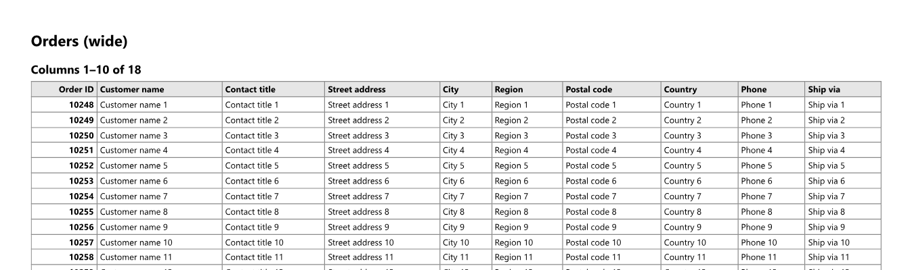